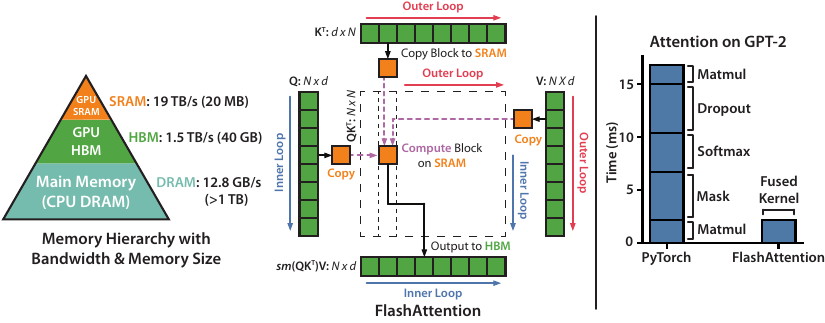
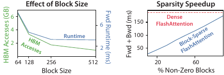
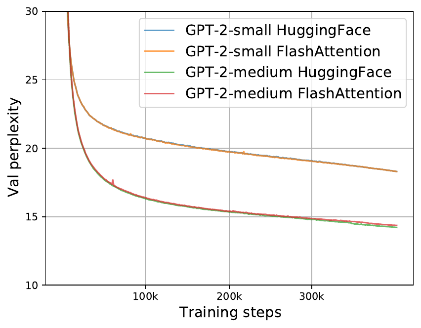
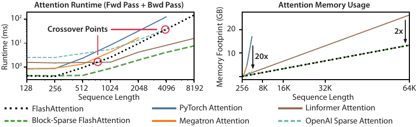

An interactive explainer · with GPU prerequisites
FlashAttention: fast, exact attention by knowing your GPU
Attention is the bottleneck of every modern Transformer. For two years before this paper, the entire field tried to make attention faster by changing the math — sparse attention, low-rank attention, kernel approximations. None of them caught on. FlashAttention does something much better: it leaves the math exactly the same and changes how the GPU loads and stores intermediate values. The trick is so plain in hindsight that the paper reads like a wake-up call: most of attention's runtime isn't math, it's memory traffic. Reorganize the computation to keep the attention matrix in fast on-chip SRAM and never write it to slow HBM, and you get 3× speedup on GPT-2, 15% on BERT, up to 20× memory savings, and the first Transformer ever to solve Path-X (16K-token sequence). This blog walks through it from the bottom — GPU memory hierarchy, arithmetic intensity, online softmax — assuming no systems background.

Here is a number that should make you stop. Standard PyTorch attention for a single GPT-2 medium attention layer (sequence length 1024, head dim 64, 16 heads, batch 64) does 66.6 billion floating-point operations and reads/writes 40.3 GB of data between the GPU's main memory and its compute units. FlashAttention does more floating-point operations — 75.2 billion, about 13% more — but moves 4.4 GB. The result: FlashAttention takes 7.3 milliseconds, the PyTorch version takes 41.7 milliseconds. The slower implementation does less math.
This is the bug at the heart of how everyone was writing attention. Attention is a stack of operations — matrix multiply, softmax, dropout, masking, another matrix multiply — each of which gets its own GPU kernel. Each kernel reads its inputs from main memory, computes, writes outputs back to main memory. For a sequence of length $N$, the intermediate attention matrix $S = QK^\top$ has $N^2$ entries, and that matrix has to make a round trip between fast and slow memory at every step. The arithmetic is cheap; the data movement is the entire bill.
FlashAttention is one CUDA kernel. It loads small tiles of Q, K, V into the GPU's on-chip SRAM, computes the full attention output for each tile, and writes only the final output back to main memory. The $N \times N$ attention matrix is never materialized — it only ever exists piece by piece in SRAM. The math is identical to standard attention, bit-for-bit (up to floating-point order of operations); the only thing that changed is the loop nesting and where the intermediate values live.
To understand how this is possible, we have to spend a few sections on prerequisites. Specifically: what the GPU memory hierarchy actually is, why some operations are limited by compute and others by memory, and why the softmax — a seemingly innocent function — is the reason naïve tiling doesn't work for attention. Then we'll see the central algorithmic insight (online softmax) that makes tiling possible, write the full algorithm, and look at the empirical results that put FlashAttention into every modern Transformer codebase within months.
1. Prerequisite: the GPU memory hierarchy
A GPU is not one thing. It is a stack of memories of wildly different sizes and speeds, sitting underneath thousands of tiny compute cores. When you "run a CUDA kernel," what happens is: data flows up from the slow, large memories into the fast, tiny ones; the compute cores do their work; results flow back down. The cost of a computation is dominated by which memories you visit and how often.
Let's use the Nvidia A100 — the GPU FlashAttention was developed on — as our concrete reference. It has three tiers of memory:
- HBM (High Bandwidth Memory). 40 GB or 80 GB depending on the SKU. Bandwidth: 1.5–2.0 TB/s. This is the GPU's main memory and the thing you mean when you say a model "fits on a GPU." When you call
tensor.to('cuda'), the tensor lives here. - SRAM (on-chip Static RAM, sometimes called shared memory). 192 KB per streaming multiprocessor (SM), and the A100 has 108 SMs, so ~20 MB total. Bandwidth: ~19 TB/s — about 10× the HBM bandwidth. But each SM only sees its own 192 KB; SRAM is private to a thread block.
- Registers. 64 KB per SM, distributed across hundreds of threads. The fastest memory in the system but absolutely tiny per-thread. Each individual thread gets at most a few dozen registers.
The single most important fact about this hierarchy is the bandwidth gap. SRAM is 10× faster than HBM. Registers are faster still. So when a kernel reads data from HBM, computes one thing, then writes the result back to HBM — that round trip dwarfs the actual computation. The way to get speed is to pull data into SRAM once and do as much work as possible while it's there.
2. Prerequisite: arithmetic intensity
So memory bandwidth and compute throughput are different numbers. The natural question is: when does which one bottleneck me? The answer is a single ratio called arithmetic intensity, defined as
$$ \mathrm{AI} = \frac{\text{floating-point operations}}{\text{bytes loaded or stored}} $$
Imagine a kernel that loads 8 bytes from HBM and does 1 FLOP with them. Arithmetic intensity = 1/8 FLOP/byte. Now compare that to the A100's hardware: it can do 312 trillion FP16 FLOPs per second, but it can only read 1.5 trillion bytes per second from HBM. The break-even point is
$$ \mathrm{AI}^* = \frac{312 \text{ TFLOPs/s}}{1.5 \text{ TB/s}} \approx 208 \text{ FLOPs/byte} $$
If your kernel's arithmetic intensity is below 208 FLOPs/byte, you are memory-bound: the GPU is starving for data, the compute cores sit idle most of the time, and the runtime is set by HBM bandwidth. If it's above 208, you are compute-bound: the data shows up faster than the cores can chew through it, and the runtime is set by FLOPs. This relationship is sometimes drawn as a "roofline" plot — flat at the bandwidth ceiling on the left, flat at the compute ceiling on the right.
Now, which operations are memory-bound vs compute-bound? Roughly:
- Compute-bound: large matrix multiplications (where every loaded element of A and B gets reused many times in the output), large convolutions. Modern GPUs are designed around these.
- Memory-bound: everything else — element-wise ops (ReLU, dropout, masking), reductions (sum, max, softmax, layer norm), small matrix multiplications. These all have AI ~1 or less.
This is why attention is so brutal. The matrix multiplications $QK^\top$ and $PV$ are compute-bound (good!) but they sit in between memory-bound operations: softmax across each row, then optional dropout and masking, then the second matmul. Every memory-bound step has to spill the full $N \times N$ intermediate matrix to HBM and read it back. The compute-bound parts could go faster, but they're starved by the memory-bound parts choking the bus.
Above, try the matmul → softmax → matmul sequence. The two matmuls would individually be compute-bound, but the softmax in between pulls the average arithmetic intensity down into the memory-bound regime. The whole pipeline is only as fast as its memory-bound bottleneck.
Kernel fusion: the standard fix
The classical way to speed up a sequence of memory-bound operations is kernel fusion: instead of writing two kernels that each load and store from HBM, write one kernel that loads, computes both steps, then stores. The intermediate values never visit HBM. PyTorch, JAX, TensorFlow all have compilers that try to do this automatically for chains of element-wise ops.
But for attention, naive fusion runs into a wall. The softmax must normalize across the entire row of the attention matrix — it needs the row's maximum and its sum-of-exponentials before it can produce any output. So even if you fuse $QK^\top$ with softmax, you still have to compute the entire row, hold it in memory, do the reduction, then proceed. If $N = 4096$ and you have a hundred attention heads in a batch, that's a lot of "entire rows" to hold somewhere.
The breakthrough of FlashAttention is finding a way to compute softmax incrementally — never needing the whole row at once — which finally enables tiling the entire attention computation through SRAM.
3. Standard attention is memory-bound
With prerequisites in hand, here is the standard attention algorithm, written in PyTorch-style pseudocode:
# Standard attention. Q, K, V are N × d matrices in HBM.
S = Q @ K.T # (N, N) matmul → write S to HBM
P = softmax(S, dim=-1) # (N, N) row-wise softmax → write P to HBM
O = P @ V # (N, d) matmul → write O to HBMThree separate kernels, three round trips to HBM. Let's count bytes for $N = 4096$ and $d = 64$ in FP16 (2 bytes per element):
- Step 1 reads $2 \cdot Nd$ bytes (Q and K), writes $2 \cdot N^2$ bytes (S). Total: $2(Nd + N^2) = 32$ MB read, 32 MB written.
- Step 2 reads $2 \cdot N^2$ bytes (S), writes $2 \cdot N^2$ bytes (P). Total: 32 + 32 = 64 MB.
- Step 3 reads $2 \cdot N^2 + 2 \cdot Nd$ bytes (P and V), writes $2 \cdot Nd$ bytes (O). Total: ~32 MB read, 0.5 MB written.
Sum: roughly 160 MB of HBM traffic per attention head per batch element. The actual FLOPs? About $2N^2 d + 2N^2 d = 4 \cdot 4096^2 \cdot 64 \approx 4.3$ GFLOPs. Arithmetic intensity $\approx 4.3 \text{ GFLOPs} / 160 \text{ MB} = 27$ FLOPs/byte — far, far below the A100's break-even of 208. We are deeply memory-bound.
The dominant term scales as $N^2$: the intermediate matrices $S$ and $P$ are $N \times N$, and we hit HBM with them three times. Standard attention's IO complexity is $\Theta(Nd + N^2)$. The Linformer / Performer / Reformer family tried to fix this by replacing $N^2$ with something smaller — low-rank approximations or sparsity patterns — and won the FLOP race but mostly lost the wall-clock race, because the constants in those approximations brought back the memory traffic they tried to eliminate. FlashAttention asks a more direct question: can we keep exact attention, but avoid writing the $N \times N$ matrix to HBM at all?

4. Tiling: compute attention in blocks
The obvious idea — and one that works perfectly for plain matrix multiplication — is to tile the computation. Instead of computing the full $N \times N$ output in one shot, break $Q$ into row blocks of size $B_r$ and $K, V$ into row blocks of size $B_c$. For each (Q-block, K-block, V-block) tuple, load just that tuple into SRAM, do the local computation, and accumulate into the output. The full matrix never sits in HBM.
For matrix multiplication alone this is trivially correct: matmul is just a sum of outer products, so any partial sum is also correct as long as you accumulate all of them. But attention has the softmax in the middle, and the softmax is not a sum of outer products. The softmax of row $i$ is
$$ \mathrm{softmax}(S_i)_j = \frac{\exp(S_{ij})}{\sum_{k=1}^N \exp(S_{ik})}, $$
and that denominator depends on every entry in the row. If you've only seen the first $B_c$ entries of row $i$, you cannot finalize any of the softmax values yet — they all need to be rescaled once you see more entries that might be larger.
This is the wall that everyone hit before FlashAttention. You can tile the matrix multiplications, but you can't tile the softmax in between, so you still have to materialize the full attention row somewhere. FlashAttention's central trick is showing that you can, in fact, tile the softmax — by carrying along two extra scalar statistics per row and updating them as new blocks arrive.
In the "standard" view above, you can see the $N \times N$ matrices $S$ and $P$ materialized in HBM. In the "FlashAttention" view, only small SRAM-sized tiles ever exist, and the output $O$ accumulates without ever materializing the intermediates. The visible reduction in red boxes (HBM data) is roughly proportional to the empirical 9× reduction in HBM accesses the paper measures.
5. The central trick: online softmax
The "two extra scalar statistics" are well-known to numerical-analysis people but had not been applied to attention before this paper. The starting point is the standard numerically-stable softmax: rather than computing $\exp(x_i) / \sum \exp(x_j)$ directly (which overflows whenever any $x_i$ is bigger than ~88), you subtract the row max first:
$$ m = \max_i x_i, \quad \ell = \sum_i e^{x_i - m}, \quad \mathrm{softmax}(x)_i = \frac{e^{x_i - m}}{\ell}. $$
This is mathematically identical and numerically safe. Now the question: if you've processed the first chunk of $x$ and computed its $m^{(1)}$ and $\ell^{(1)}$, then a second chunk arrives with its own $m^{(2)}$ and $\ell^{(2)}$, can you compute the combined $m$ and $\ell$ for $x = [x^{(1)} \mid x^{(2)}]$ without going back to the data?
Yes, and the algebra is elementary. The new max is just the max of the two maxes:
$$ m^{\mathrm{new}} = \max(m^{(1)}, m^{(2)}). $$
The sum-of-exponentials needs a rescaling. The old sum $\ell^{(1)} = \sum_i e^{x^{(1)}_i - m^{(1)}}$ was computed with the old max as the offset; if we want everything offset by $m^{\mathrm{new}}$ instead, we multiply by $e^{m^{(1)} - m^{\mathrm{new}}}$. Similarly for $\ell^{(2)}$:
$$ \ell^{\mathrm{new}} = e^{m^{(1)} - m^{\mathrm{new}}} \ell^{(1)} + e^{m^{(2)} - m^{\mathrm{new}}} \ell^{(2)}. $$
This is mathematically exact. There is no approximation anywhere. You can repeat the process arbitrarily many times, processing chunks one by one, and at the end $(m, \ell)$ are identical to what a one-shot softmax would have computed. The softmax is no longer a global operation — it's a streaming reduction with two scalars of state per row.
For attention, we don't just need the softmax values; we need the softmax-weighted output $O_i = \mathrm{softmax}(S_i) V$. The same rescaling trick extends to the output. After processing $j-1$ chunks of K and V, suppose we have running stats $(m_i, \ell_i, O_i)$ for row $i$. A new chunk arrives, contributing partial $\tilde{S}_{ij}$, $\tilde{m}_{ij}$, $\tilde{\ell}_{ij}$, and partial output $\tilde{P}_{ij} V_j$. The update is:
$$ m_i^{\mathrm{new}} = \max(m_i, \tilde{m}_{ij}), \qquad \ell_i^{\mathrm{new}} = e^{m_i - m_i^{\mathrm{new}}} \ell_i + e^{\tilde{m}_{ij} - m_i^{\mathrm{new}}} \tilde{\ell}_{ij}, $$
$$ O_i^{\mathrm{new}} = \mathrm{diag}(\ell_i^{\mathrm{new}})^{-1}\Big(\mathrm{diag}(\ell_i) e^{m_i - m_i^{\mathrm{new}}} O_i + e^{\tilde{m}_{ij} - m_i^{\mathrm{new}}} \tilde{P}_{ij} V_j\Big). $$
The output $O_i$ gets rescaled by the same factor that rescales the sum, plus the contribution from the new chunk. Each chunk only needs to be in SRAM for one iteration — the running $(m_i, \ell_i, O_i)$ summaries are enough to carry forward.
Step through above and watch the running max and sum evolve. At every intermediate step, the partial output $O_i$ may look very different from the final answer — that's because we have not yet seen the chunks with the largest scores. But after the last chunk is processed, the running stats are bit-identical to what a one-shot softmax would produce.
6. The full FlashAttention algorithm
Now we can write down the actual algorithm. The block sizes are chosen so that one Q-block plus one K-block plus one V-block (plus running stats) fits in SRAM. With $M$ = SRAM size, $d$ = head dimension, set
$$ B_c = \left\lceil \frac{M}{4d} \right\rceil, \qquad B_r = \min\!\left(\left\lceil \frac{M}{4d} \right\rceil,\; d\right). $$
For $M = 100$ KB and $d = 64$ in FP16, that gives $B_c, B_r \approx 64$. So each iteration handles a $64 \times 64$ tile of the attention matrix at a time, all in SRAM.
The outer loop iterates over K, V blocks; the inner loop iterates over Q blocks. For each (K-block, Q-block) pair, the algorithm computes the $B_r \times B_c$ tile of attention scores, partial softmax stats, and accumulates into the output:
# FlashAttention (forward pass). One CUDA kernel.
# Inputs: Q, K, V ∈ HBM, shape (N, d). SRAM size M.
# Outputs: O ∈ HBM, shape (N, d).
Bc = ceil(M / (4d))
Br = min(Bc, d)
Tc = ceil(N / Bc) # number of K, V blocks
Tr = ceil(N / Br) # number of Q blocks
Initialize O = zeros(N, d), ℓ = zeros(N), m = -inf * ones(N) # in HBM
for j = 1 to Tc: # outer loop: K, V blocks
Load Kj, Vj from HBM to SRAM # ~2·Bc·d bytes
for i = 1 to Tr: # inner loop: Q blocks
Load Qi, Oi, ℓi, mi from HBM to SRAM
Sij = Qi @ Kj.T # (Br, Bc), in SRAM
m̃ij = rowmax(Sij) # (Br,)
P̃ij = exp(Sij - m̃ij) # (Br, Bc)
ℓ̃ij = rowsum(P̃ij) # (Br,)
mi_new = max(mi, m̃ij)
ℓi_new = exp(mi - mi_new) * ℓi + exp(m̃ij - mi_new) * ℓ̃ij
Oi = diag(ℓi_new)^-1 * (
diag(ℓi) * exp(mi - mi_new) * Oi
+ exp(m̃ij - mi_new) * P̃ij @ Vj
)
Write Oi, ℓi_new, mi_new to HBM
return OEvery line marked "in SRAM" is fast: the data is already on-chip, no HBM traffic. The HBM accesses are confined to loading the blocks at the start of each iteration and writing the updated $O_i$ at the end. Loading a tile of $Q$ once per outer iteration means $Q$ gets loaded $T_c$ times in total, which is the dominant traffic. Total HBM accesses: $\Theta(N^2 d^2 / M)$. With $d = 64$ and $M = 100$ KB, $d^2/M \approx 0.04$, so this is 25× less than the naive $N^2$ — exactly the speedup the paper measures.
One subtle implementation note: the outer loop is over K, V blocks rather than Q blocks. This is so that each K, V block is loaded once and re-used across all Q blocks. In total, K and V are each read $T_r$ times (one per Q block); Q and O are each read $T_c$ times (one per K, V block). For $N = 4096$, $d = 64$, $M = 100$ KB, we get $T_c = T_r \approx 64$, so each input tensor is loaded about 64 times rather than the few hundred times standard attention would imply. The arithmetic intensity climbs into the compute-bound regime, the FMA units fire on every cycle, and we're done.
The manim animation below shows the central step — processing one chunk of attention scores and updating the running $(m, \ell, O)$ — that this entire algorithm is built on. Every iteration of the inner loop does exactly this update once.
Processing a row of 8 attention scores in 4 chunks. After each chunk, the running max $m$, sum $\ell$, and weighted output $O$ get updated using the rescaling identity. The final $(m, \ell, O)$ are bit-identical to a one-shot softmax — but we never had to hold the full row in memory at once.
7. The backward pass: recomputation
So far we've handled the forward pass. The backward pass — needed for training, not inference — has a different challenge. Normally, backward attention requires the $N \times N$ matrices $S$ and $P$ to compute gradients with respect to $Q, K, V$. If we don't store them during the forward pass, where do they come from?
Answer: recompute them. During the backward pass, FlashAttention rebuilds the relevant tiles of $S$ and $P$ from scratch using the saved output $O$ and the saved softmax stats $(m, \ell)$. This costs extra FLOPs — the backward pass does roughly $2.5 \times$ the FLOPs of standard attention — but it saves the $O(N^2)$ HBM round trips for $S$ and $P$, and the savings dwarf the extra arithmetic.
This is conceptually identical to gradient checkpointing, a well-known technique for trading compute for memory in deep networks. The twist is that in FlashAttention, recomputation makes the algorithm both faster and more memory-efficient — because the cost of moving the saved activations through HBM was greater than the cost of recomputing them. Normally gradient checkpointing slows training down for the sake of fitting bigger models; FlashAttention recomputation speeds it up and shrinks the memory footprint.
The backward IO complexity is the same as forward: $\Theta(N^2 d^2 / M)$ HBM accesses. The forward + backward total is still dominated by the same term, and the linear-in-$N$ memory footprint (storing only $O$, $m$, $\ell$, all of size $O(N)$ or $O(Nd)$) means you can run much longer sequences without OOM.
8. IO complexity: the asymptotic story
Section 3.2 of the paper proves the asymptotic IO complexities. Let $N$ = sequence length, $d$ = head dimension, $M$ = SRAM size.
| Algorithm | HBM accesses | FLOPs | Extra memory |
|---|---|---|---|
| Standard attention | $\Theta(Nd + N^2)$ | $\Theta(N^2 d)$ | $\Theta(N^2)$ (S, P) |
| FlashAttention | $\Theta(N^2 d^2 / M)$ | $\Theta(N^2 d)$ | $\Theta(N)$ (m, ℓ) |
The FLOPs are identical asymptotically (the recomputation factor is a constant). The big wins are the HBM access count and the auxiliary memory.
For the typical regime $d \in [64, 128]$ and $M \approx 100$ KB on an A100, $d^2 / M$ is much less than 1, so FlashAttention's HBM accesses are fewer in absolute terms than standard attention — not just better-scaling. The paper measures 9× fewer HBM accesses for GPT-2 medium attention; on shorter sequences (where the "$Nd$" term in standard attention's complexity matters less compared to "$N^2$"), the ratio grows.
The paper also proves a lower bound: no exact attention algorithm can achieve $o(N^2 d^2 / M)$ HBM accesses across all SRAM sizes. So FlashAttention is asymptotically optimal — there is no algorithm hiding around the corner that does fundamentally better on memory traffic. The only way to beat it asymptotically is to give up exactness (sparse, low-rank, kernel approximations) or to grow SRAM.
Slide $N$ above. At small $N$, the two algorithms are similar — there isn't enough memory traffic to dominate. By $N = 4096$, FlashAttention is several times faster; by $N = 16384$, standard attention runs out of memory and FlashAttention is still going.
9. Results
FlashAttention is an exact drop-in replacement for attention, so its results all take the form "same model, faster and/or longer." A selection:
| Setting | Quantity | FlashAttention | Baseline |
|---|---|---|---|
| BERT-large | training time (8× A100) | 17.4 min | 20.0 min (Nvidia MLPerf 1.1) |
| speedup vs MLPerf record | 1.15× | 1.00× | |
| GPT-2 small (OpenWebText) | training time (8× A100) | 2.7 days | 9.5 days (HuggingFace), 4.7 days (Megatron-LM) |
| perplexity | 18.2 (identical) | 18.2 (HuggingFace, Megatron) | |
| speedup vs HuggingFace | 3.5× | 2.0× (Megatron) | |
| GPT-2 small @ 4K context | perplexity (vs 1K context) | 17.5 (4K, FA) | 18.2 (1K, Megatron); 4× longer ctx, still 30% faster training |
| Long-Range Arena (1K-4K) | speedup | 2.4× | 1.0× (vanilla Transformer) |
| Path-X / Path-256 | Path-X accuracy (seq 16K) | 61.4% (first Transformer ever) | random (50%) — all prior Transformers OOM or random |
| Path-256 accuracy (seq 64K) | 63.1% (block-sparse FA, first ever) | random | |
| Attention microbenchmark (A100) | speedup vs PyTorch attention | up to 3× (exact) | 1× (PyTorch) |
| memory vs PyTorch attention | up to 20× less | 1× (PyTorch) |
The headline result inside the paper, though, is the Path-X benchmark. Path-X is a 16,384-token sequence-classification task where the model has to decide whether two dots in a 128×128 image are connected by a path, fed pixel by pixel. Before FlashAttention, no Transformer could even fit the task in memory — every previous attempt either OOM'd or hit random accuracy because the model could only see a small window of the sequence. FlashAttention is the first Transformer to do better than chance (61.4%) by simply being able to process the full sequence. Block-sparse FlashAttention extends this to Path-256 at 64K tokens.


10. Why this works (the broader principle)
It's worth stepping back and asking why this paper is so consequential, beyond the immediate speedups. Three meta-points.
FLOPs are a poor proxy for runtime
For two decades, "make ML faster" meant "do fewer floating-point operations." That heuristic worked when compute was scarce and memory was abundant. It stopped working around 2018, when GPUs got fast enough that compute throughput outran memory bandwidth. Today on an A100, the break-even arithmetic intensity is ~208 FLOPs/byte; most ML operations are well below that, so what looks like a clever FLOP-saving algorithm often runs slower than the naive version because it spends more time on memory traffic. The Linformer/Performer/Reformer line of work is partly a casualty of this — they trade exactness for FLOP reduction, but the constants in their kernels often bring back enough memory traffic to wash out the savings.
FlashAttention is the loud, clarifying example of this: it does more FLOPs than standard attention (75 vs 67 GFLOPs) and runs 5.7× faster, because it does 10× less memory traffic. The lesson is that the right cost model is not FLOPs but bytes-moved-times-bandwidth-cost.
Memory hierarchy awareness pays
The deep prior here is from numerical linear algebra. The BLAS-3 algorithms (matmul, Cholesky factorization, QR decomposition) all work via tiling: load a chunk of the matrix into the highest-bandwidth memory you have access to, do as much arithmetic as possible while it's there, store the result. This idea is decades old. What FlashAttention shows is that it works for ML ops too, with the right algorithmic restructuring (online softmax) to handle non-linear reductions. The principle generalizes — and after FlashAttention you can find similar treatments for layer norm, dropout, gradient checkpointing, and more.
The right level of abstraction matters
PyTorch and TensorFlow give you tensors and operations; they hide the GPU. This is great for productivity but it means that any optimization that requires controlling memory access — which is most performance-critical work — needs to be done outside the framework, in CUDA or Triton. FlashAttention was written as a custom CUDA kernel. The friction of doing this is real, but it's the only way to access the memory hierarchy directly. The followup work (Triton implementations, FlashAttention-2, FlashAttention-3) all live at this lower level.
11. What it means
FlashAttention is the rare paper that combined a deep idea (online softmax, dating back to Milakov & Gimelshein), a careful systems analysis (the IO complexity proofs and the lower bound), and a beautifully engineered artifact (a CUDA kernel that beat every existing attention implementation). Within a year it was the default attention kernel in PyTorch (scaled_dot_product_attention), HuggingFace, vLLM, and essentially every modern LLM training and inference stack. The architecture-level claim "Transformers have $O(N^2)$ scaling problems" is now significantly weaker — FlashAttention reduces the constant on that $N^2$ by an order of magnitude, which means context lengths of 100K+ tokens are practical on a single GPU.
Practical implications
- Use FlashAttention everywhere. It is a drop-in, exact replacement for
nn.MultiheadAttentionwith no quality loss. There is essentially no reason to use standard attention in 2025 unless you're on hardware that doesn't have a FA implementation. - Long context is mostly an engineering problem. The "attention is quadratic" framing pushed the field toward sparse/linear-attention alternatives. FlashAttention shows that careful kernel work — without changing the math — gets you most of the way. Most "long-context" LLMs today use FA-derived kernels, not sparse attention.
- FLOPs are a misleading metric. When comparing two model architectures or two attention variants, run wall-clock benchmarks, not FLOP counts. FlashAttention vs standard attention is the canonical counterexample.
- Memory hierarchy literacy is a competitive skill. The single most impactful systems paper in ML for the last five years was written by people who actually thought about SRAM. There is more ground here — gradient compression, activation streaming, mixed-precision tradeoffs — and the field is short on people who can do it.
Open problems
- Attention on new hardware. Each new GPU generation (Hopper, Blackwell) has new memory features (Tensor Memory Accelerator, distributed shared memory). FlashAttention-3 is the latest iteration; the next generation is unwritten.
- Variable-length sequences and irregular sparsity. FlashAttention assumes a regular grid of blocks. Production workloads (multi-tenant inference, prefix caching, KV cache reuse) introduce ragged sequences and irregular access patterns that the tiled kernel doesn't handle as elegantly.
- Composability. FlashAttention fuses attention into one kernel; what about fusing attention + MLP + layer norm into one bigger kernel? The compiler infrastructure to do this end-to-end is still maturing (Triton, FlexAttention, etc.).
- Beyond attention. The principle — restructure ML kernels to be IO-aware — applies to many other ops. There is room for "FlashLayerNorm," "FlashMLP," etc. Some of these exist; a comprehensive treatment doesn't.
The bottom line
The thing that made attention slow was never the math. It was that every memory-bound step in the attention pipeline had to spill the $N \times N$ intermediate matrix to HBM and read it back, and the round trip cost an order of magnitude more than the math itself. FlashAttention's contribution is to notice this, find the algorithmic trick (online softmax) that lets the entire computation fit in SRAM, and engineer a CUDA kernel that uses it. The same answer, computed faster, by knowing how the hardware actually works. After this paper, every serious systems person working on ML kernels thinks in terms of memory traffic first, FLOPs second. That reordering of priorities is the lasting contribution.